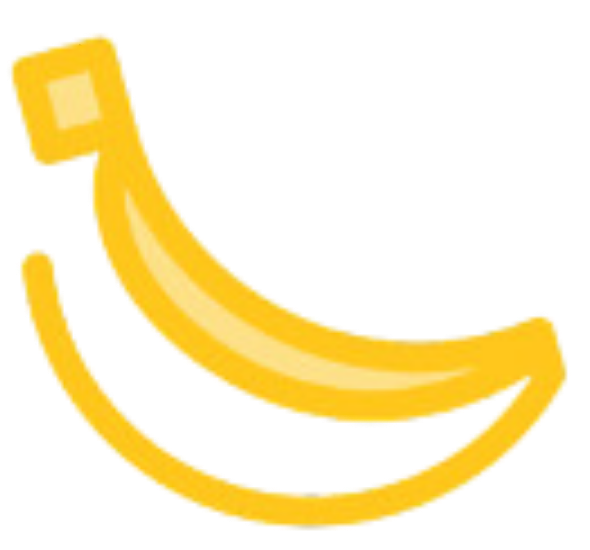

Qué hace cada pantalla, qué ve cada persona del equipo, qué mensajes aparecen y por qué, y qué pasa por detrás cada vez que alguien agenda una cita. Este documento crece con la app: cuando añadimos algo, lo veréis en Novedades.